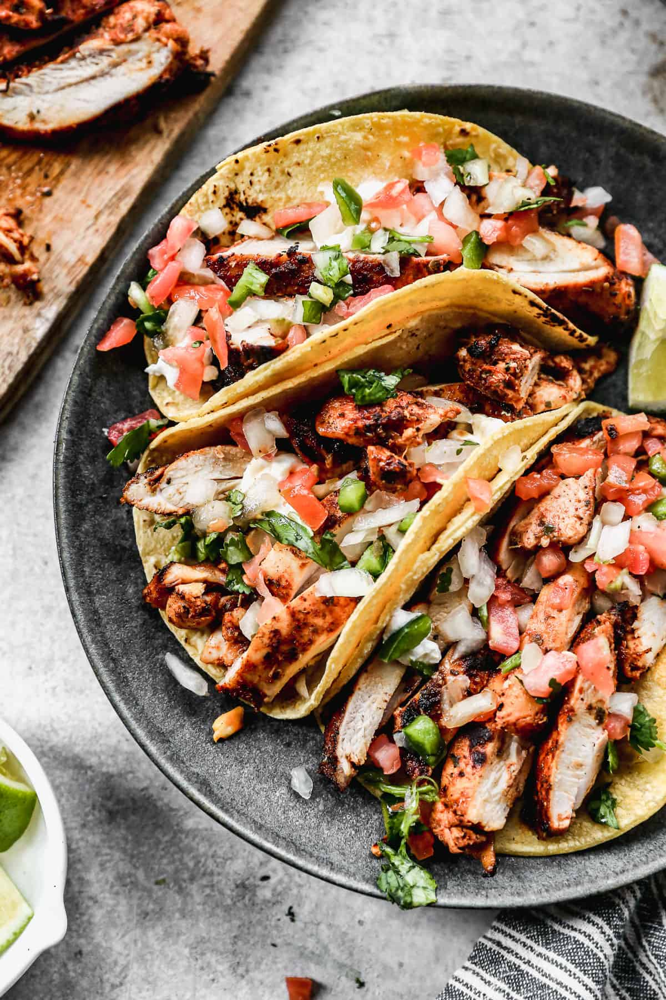

Chicken Street Tacos

Description
I love how EASY they are to make! Marinated chicken thighs are grilled to perfection and served with warmed corn tortillas, pico de gallo, and cilantro.
Ingredients
For the Tacos:
- 1.5 pounds boneless skinless chicken thighs , or breasts/li>
- 24 white corn tortillas , warmed
- 2 cups Pico de gallo
- 1 /2 cup fresh cilantro , chopped
- 6 lime wedges
- More optional toppings: guacamole, sour cream, pickled red onion, hot sauce
For the Marinade:
Instructions
- Marinate Chicken: Make chicken marinade by combining all marinade ingredients in a bowl. Add chicken thighs and refrigerate for at least 1 hour or up to overnight.
- Grill Chicken: Preheat grill over medium-hight heat. Grease the grill or spray generously with cooking spray. Remove chicken from marinade and place on hot grill. Cook for about 4-5 minutes on each side, flipping once (thickest part of the chicken thigh should register about 165 degrees F). Transfer chicken to a plate and allow to rest for a few minutes before chopping into small pieces.
- Assemble: Warm tortillas on dry grill or skillet on the stove for a few seconds on each side. Layer two warmed mini street corn tortillas together. Top with chopped chicken, pico de gallo, cilantro, hot sauce, sour cream, pickled red onion, or desired toppings. Serve with a lime wedge for squeezing on top.
- Serve with a side of Mexican Rice, Elotes (Mexican Corn), and a glass of Horchata.
Information:
- Author: Lauren Allen
- Prep Time: 15 minutes
- Cook TIme: 10 minutes
- Total Time: 25 minutes
- Servings: 4
- Calories Per Servings: 632 kcal